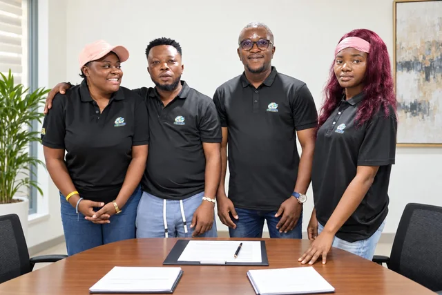
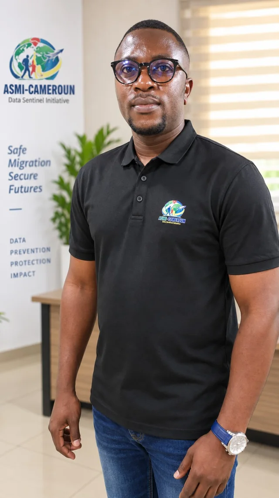

Dignity
People are not case studies, statistics or fundraising stories.
About ASMI-Cameroun
ASMI-Cameroun is a Cameroonian association working against fake job offers, online recruitment scams and human trafficking. We teach people how to verify an offer, and we use anonymous data to see what scammers do next.

Our identity
African Safe Migration Initiative – Cameroun is a non-profit, non-political association. Our work is to prevent trafficking, fake international job offers, online recruitment scams and unsafe migration.
We pair practical education with careful data collection. If a question doesn’t help us make a decision, we don’t ask it.

Leads the organisation and represents it before institutions
Fabrice sets our direction, represents ASMI-Cameroun before institutions, oversees the programmes and Data Sentinel, handles partnerships and signs off on major decisions, within the limits of our statutes.
We talk about migration risks plainly, and we never use someone’s story to raise money.
Institutional principleHow we work
People are not case studies, statistics or fundraising stories.
We only collect data that helps us make a prevention, protection or policy decision.
If we say something, we can show the document behind it.
We start in Moungo and build tools that can travel to other regions and countries.